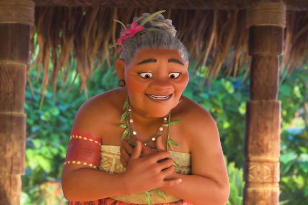
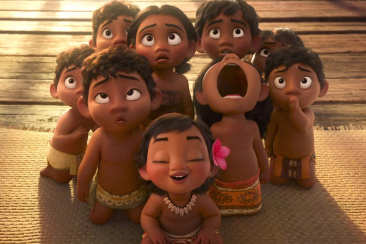
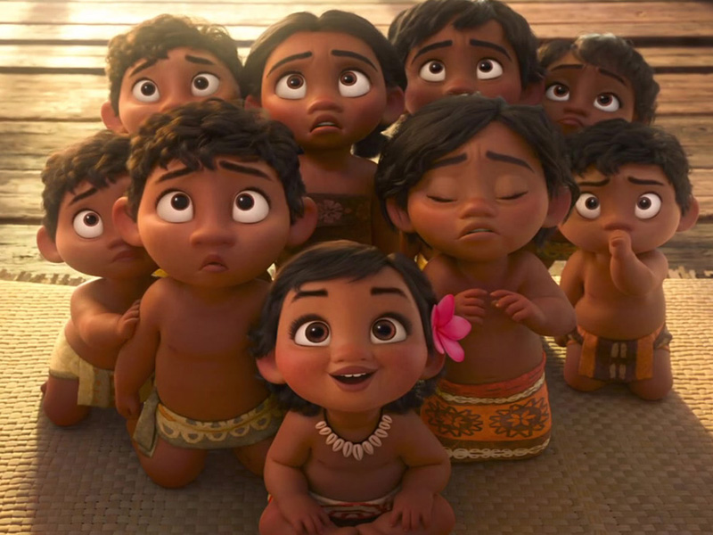
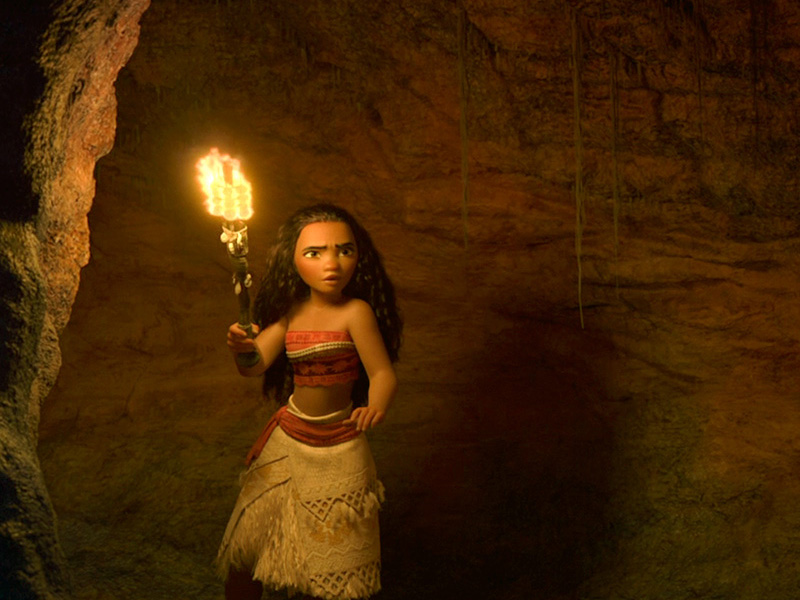
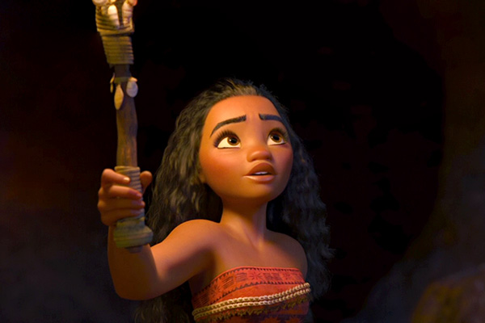
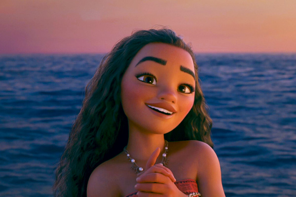
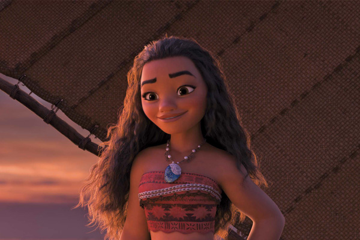
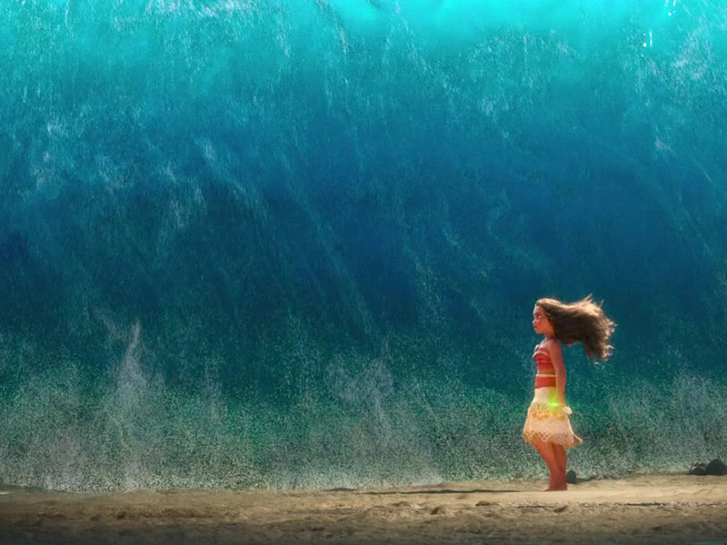

Story
About
plot
-
Plot . 1
On the Polynesian island of Motunui, the inhabitants worship the goddess of nature Te Fiti, who brought life to the ocean long ago using a pounamu stone as her heart and the source of her power. Maui, the trickster, shape-shifting demigod of the wind and sea and master of sailing, steals the heart to give humanity the power of creation. This causes Te Fiti to disintegrate, and Maui is attacked offshore by Te Kā, a volcanic demon. He loses both the heart and his magical giant fishhook to the depths of the sea.
- 
- 
 -
Plot . 2
Moana suggests going beyond the island's reef with her pet pig, Pua, to find more fish and find out what is happening, but Tui forbids it. Moana tries conquering the reef but is overpowered by the tides and shipwrecked back to Motunui. That afternoon, Moana's grandmother, Tala, shows her a secret cave of ships, revealing that their people were voyagers until Maui stole Te Fiti's heart; the ocean was no longer safe without it.
- 
- 
- 
-
Plot . 3
The ocean obliges and takes the heart, but Tala's spirit appears, inspiring Moana to find her true calling. She retrieves the heart and sails back to confront Te Kā. Maui returns, having had a change of heart, and buys Moana time to reach Te Fiti by fighting Te Kā, destroying his hook in the process. Upon being unable to find Te Fiti, Moana realizes Te Kā is Te Fiti, corrupted without her heart. The ocean clears a path for Moana, allowing her to return the heart to Te Fiti, who heals the ocean and islands of the blight.
